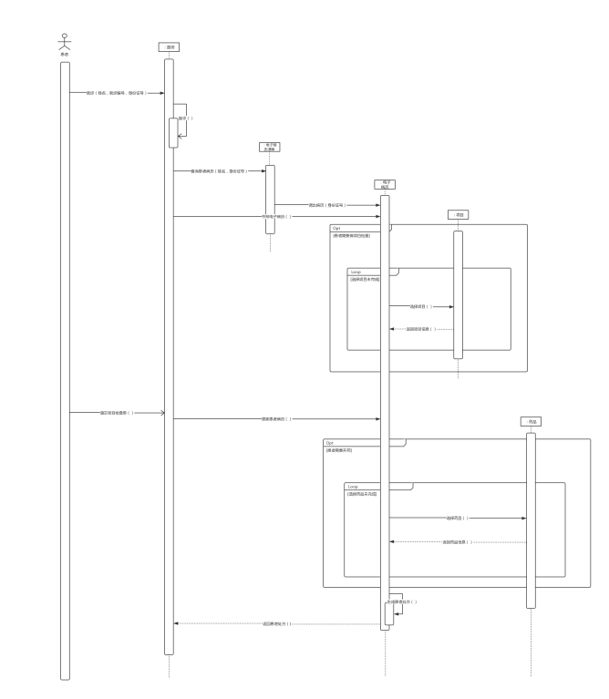
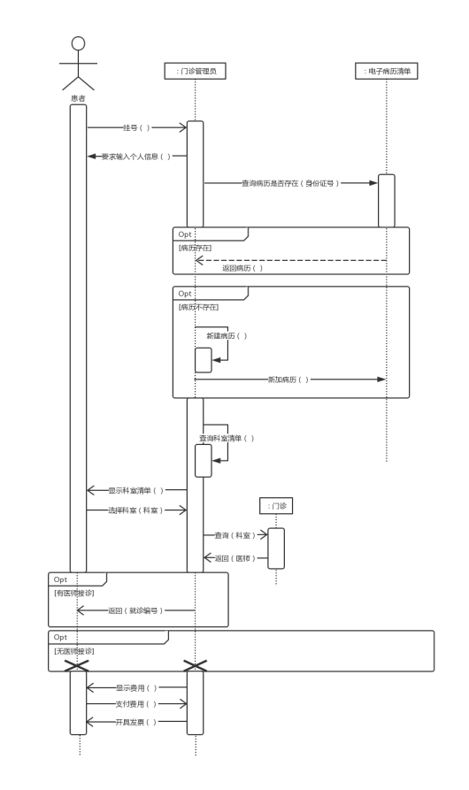
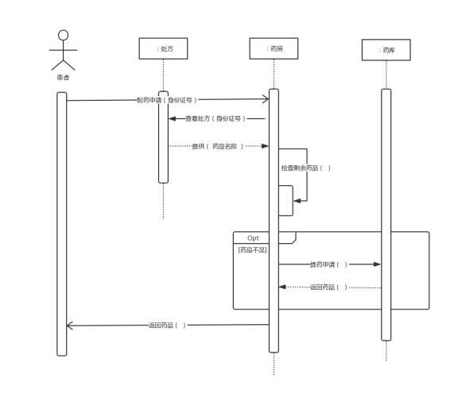

实验报告(第十组顺序图)
-------------------------------------------------------------
学生姓名:王若凡 学号:161810308
孙茜茹 161810101
方丹枫 161820304
陈楚燚 161830218
姜志杰 161830318
实验地点:计算机实验楼104
实验时间:2019/11/15
-------------------------------------------------------------
一.实验名称
校医院门诊管理系统 顺序图构建
二.实验目的
使用 UML为校医院门诊管理系统构建顺序图
实验要求：
1）基于用况图和类图，构建不少于3个顺序图；
2）每个顺序图中包含不少于4个对象（或参与者）；
3）顺序图中对方法调用、消息传递的描述要准确，注意区分消息的类型；
4）针对不少于2个顺序图，给出详细的语言描述说明；
5）顺序图要清晰、明了、美观。
三.实验内容与步骤
实验内容 ：
1）基于之前构建的用况图和类图，运用面向对象的理论与方法对类间的（静态）关系进行详细的分析（动态特征）；
2）对分析的结果进行建模，使用UML建模工具，构建顺序图；
3）针对所构建的顺序图，给出完整、详细的语言描述。
实验步骤：
1）根据已经画好的用况图和类图，从其中找出3个比较重要的对象间的动态交 互过程；
2）按照当前交互的意图，设置交互的语境，确定可能需要的对象；
3）识别对象在交互中扮演的角色，为每个对象设置生命线；
4）决定消息将以怎样的序列在对象之间传递；
5）在各对象生命线上，按使用该对象操作的先后次序排列各个代表操作执行的棒形条(执行规约)。
6）检查顺序图的完整性，以及与用况图和类图逻辑上的一致性；
7）检查顺序图并写实验报告。
四.实验结果
模型截图：

门诊看病顺序图

门诊挂号顺序图

取药顺序图
模型规约说明：
①门诊挂号说明：
患者向门诊管理员挂号，门诊管理员要求患者输入个人信息。门诊管理员查询病历是否存在在电子清单中，如果存在返回病历；否则门诊管理员新建一个病历并加入病历清单中。门诊管理员调出存储的科室清单，然后向患者显示科室清单，患者选择科室，门诊管理员向门诊查询科室信息，门诊返回该科室的医师，如果有医师接诊，门诊管理员给患者就诊编号；否则退出挂号。门诊管理员向患者显示费用，患者向门诊管理员支付费用，门诊管理员给患者开具发票。
②门诊看病说明：
患者向医生发出消息就诊，医师自调用接诊，通过电子病历清单查询患者的电子病历，书写电子病历，若患者需要项目检查，则在电子病历中选择项目，可添加多个项目。患者进行项目检查后向医师递交项目检查单，医师更新患者病历，若患者需要开药，则在电子病历中选择药品，可添加多个药品，根据电子病历生成患者处方返回给医师。
③取药说明：
患者向药房发出配药申请，药房通过患者提供的身份证号查看患者处方 ，然后药房根据处方返回的药品名称检查剩余药品 存量，若药品不足，向药库发出提药申请，获得药品，最后将药品返回给患者。
五．分析与总结
顺序图可以用于详细地描述对象间的交互，即捕获对象是怎样提供操作的，以及对象之间是如何协作的。 利用顺序图可以比较直观的反映程序执行的过程，特别是在表示各个对象之间的调用顺序，顺序图是个不错的选择。
画顺序图的过程中我们又对照检查每个用况中描述的用户需求是否已经落实到相应的对象中去实现，这帮助我们补充了一些遗漏的类和操作，并且帮助我们去发现哪些对象是主动对象。
为了保持和前面的类图和用况图的一致性，我们又对类图进行了改动，在电子病历中增加了一个操作生成患者处方，医师的操作中添加一个更新电子病历的操作。